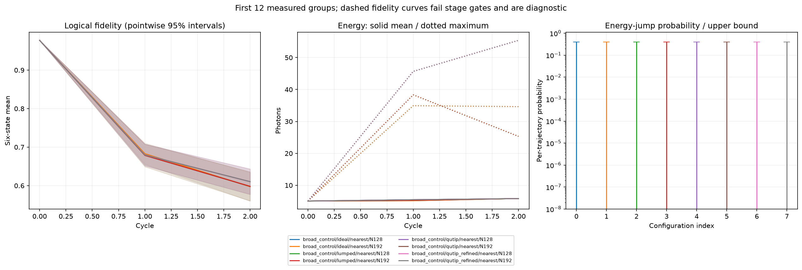

8/8 jobs executed. Classification: benchmark_observations. Numerical certification requires scoring, cutoff and independent-instrument checks in addition to stage gates.

Plots show up to12 measured groups; all groups are in JSON/CSV. Results after failed numerical gates are diagnostic. Intervals on incomplete groups are interim descriptions.
| Configuration | Chunks | Stage gates | Final mean fidelity |
|---|---|---|---|
| broad_control/ideal/nearest/N128 | 1/1 | pass | 59.7378% |
| broad_control/ideal/nearest/N192 | 1/1 | pass | 59.7378% |
| broad_control/lumped/nearest/N128 | 1/1 | pass | 59.8192% |
| broad_control/lumped/nearest/N192 | 1/1 | pass | 59.8192% |
| broad_control/qutip/nearest/N128 | 1/1 | pass | 61.0352% |
| broad_control/qutip/nearest/N192 | 1/1 | pass | 61.0352% |
| broad_control/qutip_refined/nearest/N128 | 1/1 | pass | 61.0348% |
| broad_control/qutip_refined/nearest/N192 | 1/1 | pass | 61.0347% |
Counts, fixed-budget intervals and completeness · Frozen plan